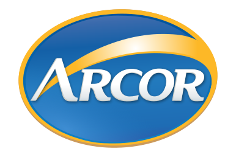
×Uma régua,
quatro personalidades.
Quatro marcas da Arcor, o KV oficial de cada uma e 55 peças de ponto de venda desdobradas a partir dele, das leves às pesadas.
Fizemos antes de pedir, com o que já é de vocês.
Pegamos quatro marcas reais da Arcor e o key visual oficial de cada uma, sem briefing e sem manual de marca, e desdobramos em peças de ponto de venda. É o mesmo caminho que a conta percorre toda semana: o KV entra, a peça sai pronta para aprovar.
Rocklets, Tortuguita, 7Belo e Butter Toffees, exatamente como a Arcor publica.
Promessa, herói, forma e caminho do shopper. Sempre nessa ordem.
Conceito realista de cada peça, com medida, material e tiragem, antes de virar 3D.
Demonstração criada sem briefing nem manual de marca da Arcor. Os KVs são os oficiais das marcas; as peças são conceitos da 75 LAB em aprovação.
O KV é a promessa. A peça tem de cumpri-la na gôndola.

Crocante por fora, irresistível por dentro.Rocklets

Cremosa, recheada e agora com mais leite.Tortuguita

O sabor inconfundível de 7Belo agora em pirulito.7Belo
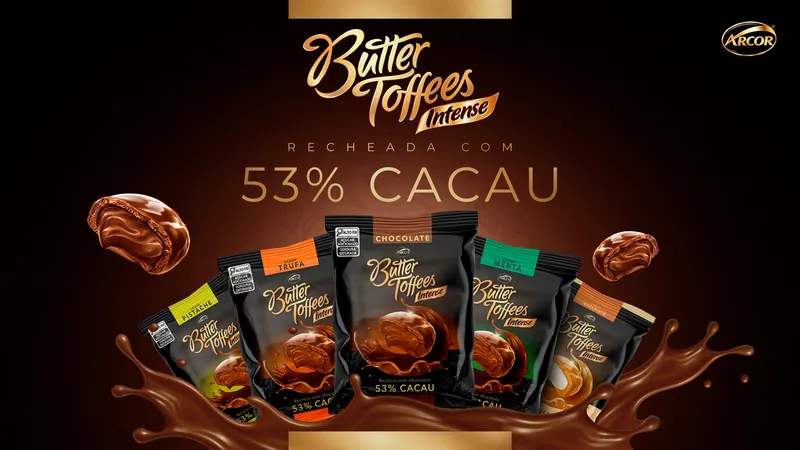
Recheada com 53% cacau.Butter Toffees
Key visuals oficiais das marcas Arcor, usados como referência obrigatória: mesmo logo, mesma embalagem, mesmas cores e mesma linguagem.
Do KV à peça em quatro decisões.
O que o KV diz numa frase. A peça repete a promessa, não inventa outra.
Rocklets: crocante por fora, irresistível por dentroO elemento de que a marca é dona e que ninguém confunde com o vizinho de gôndola.
Rocklets: a drágea colorida partida ao meioO herói deixa de ser impressão e vira estrutura: volume, recorte, camada.
Rocklets: meias esferas termoformadas nas cores da marcaCada peso de peça trabalha num metro diferente da loja, da porta ao caixa.
Rocklets: do adesivo de chão à fachada
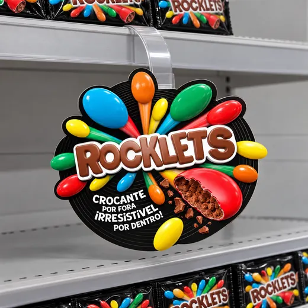

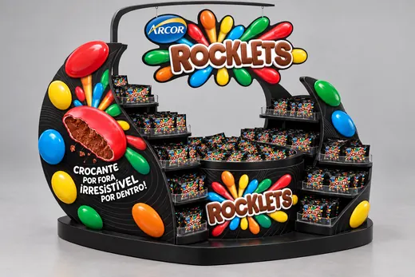
A mesma drágea do KV, no wobbler de 15 cm, no display de 1,60 m e na ilha de 2 m.
Inovar na ideia e na forma. Nunca no efeito.
- Recorte eletrônico com borda real
- Camadas de PS e papelão com espessura aparente
- Hot stamping e verniz localizado
- Acrílico com reflexo verdadeiro
- Uma ideia forte por peça, com respiro
- Embalagem real abastecendo a peça
- Neon e LED brilhando em tudo
- Brilho mágico e partículas
- Chocolate em computação gráfica
- Cor saturada e luz cinematográfica
- Excesso de elementos e simetria perfeita
- Caixa retangular com arte colada
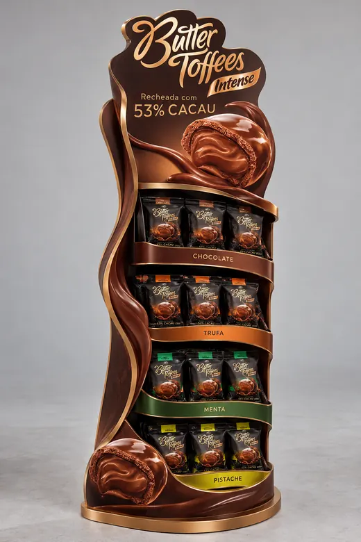
Foto de estúdio, não ilustração. Fundo cinza neutro, luz suave, sombra real no piso. A peça é o único destaque, para a aprovação julgar a peça e não o cenário.
Régua aplicada nos 55 conceitos da rodada 2. A rodada 1, de artes planas aplicadas em caixas genéricas, foi reprovada pela própria 75 LAB antes de chegar a vocês.
Leves convertem, médias criam ponto extra, pesadas mudam o espaço.
Régua, wobbler, stopper, testeira, clip strip e adesivo de chão. Chamam o olhar no ponto de preço e levam a mão até o produto.
Display de chão, display de balcão, totem, ponta de gôndola e portal. Tiram a marca da prateleira e criam um segundo lugar de compra.
Ilha, store in store, degustação e fachada. Poucas unidades nas lojas certas, onde a marca vira destino.
Tiragem de referência por marca, usada para dimensionar material e acabamento de cada peça. Quinze peças por marca; a Tortuguita fechou a rodada 2 nas leves e médias.
A drágea sai do KV e vira volume.
- Promessa
- Crocante por fora, irresistível por dentro.
- Herói
- A drágea colorida partida, mostrando o chocolate.
- Código
- Fundo preto em espiral, explosão de cores, letreiro marrom.
- Forma
- Meias esferas termoformadas nas cores da marca, recorte que segue a silhueta das drágeas.
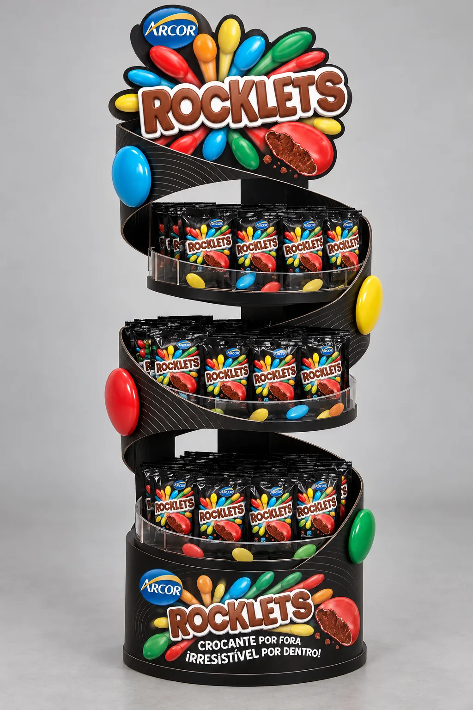
RK-07display de chão em espiral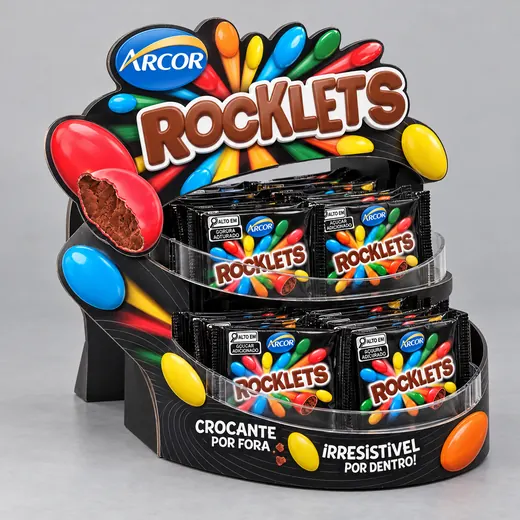
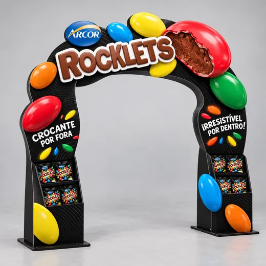
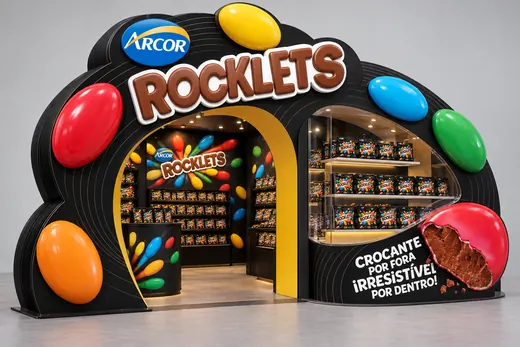
O display de chão gira como o vinil do fundo do KV: a espiral deixa de ser fundo e vira prateleira.
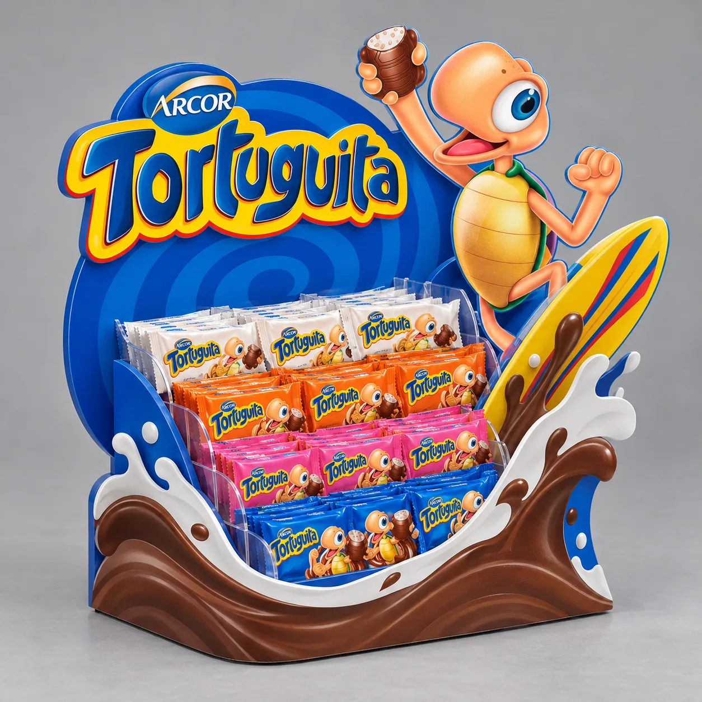
TG-08display de balcãoA mascote sai do papel e surfa na prateleira.
- Promessa
- Cremosa, recheada e agora com mais leite.
- Herói
- A tartaruga surfando na onda de leite e chocolate.
- Código
- Azul com espiral clara, letreiro amarelo com contorno azul.
- Forma
- A mascote como recorte grande em camadas, e a onda de leite e chocolate como recorte da base.
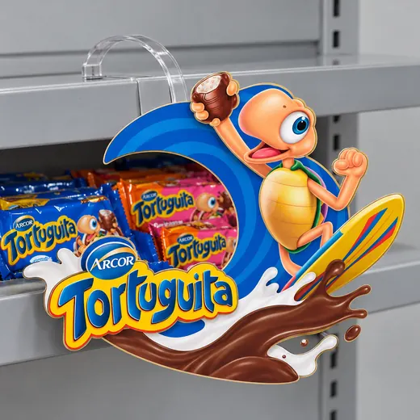
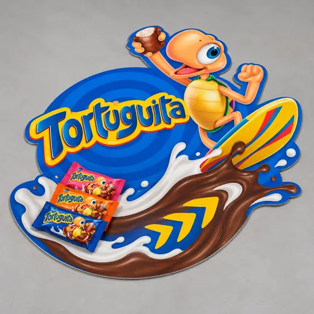
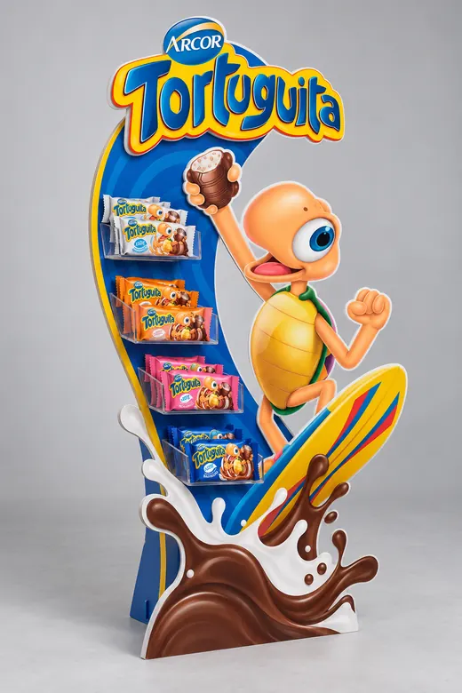
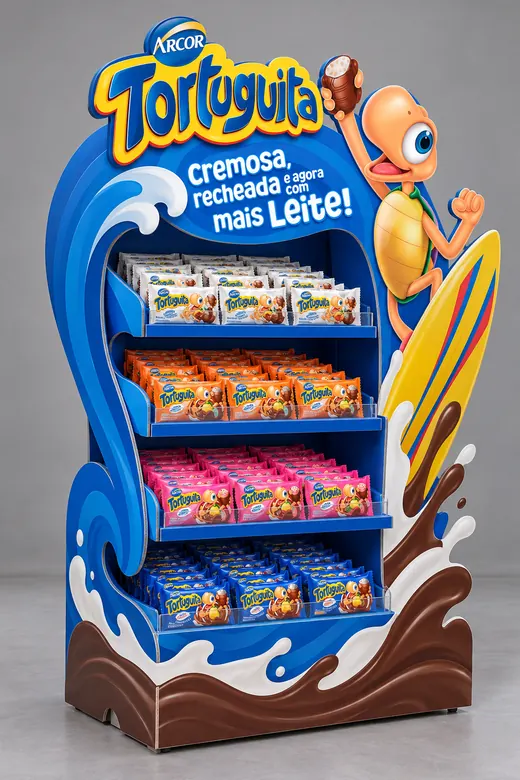
Personagem é o que a criança aponta de longe. Por isso a tartaruga é sempre a maior coisa da peça, e o produto fica na onda.
O pirulito ganha tamanho de loja.
- Promessa
- O sabor inconfundível de 7Belo, agora em pirulito.
- Herói
- O pirulito de framboesa, a novidade da linha.
- Código
- Azul-marinho com losangos de carta, ziguezague rosa.
- Forma
- Pirulitos gigantes em volume, esfera em acrílico e palito em tubo branco, losangos nas laterais.
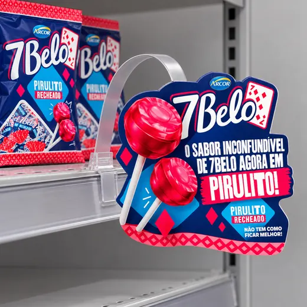
7B-02wobbler 7B-11portal de corredor
7B-11portal de corredor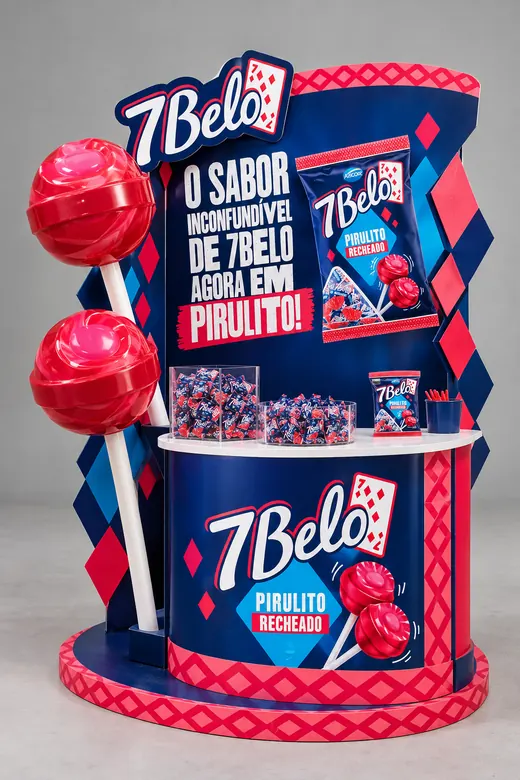
7B-14degustaçãoLançamento precisa ser visto antes de ser lido. O pirulito em volume avisa a novidade do outro lado do corredor, e o losango garante que é 7Belo.
Uma boutique de chocolate dentro do supermercado.
- Promessa
- Recheada com 53% cacau.
- Herói
- O bombom partido na onda de chocolate.
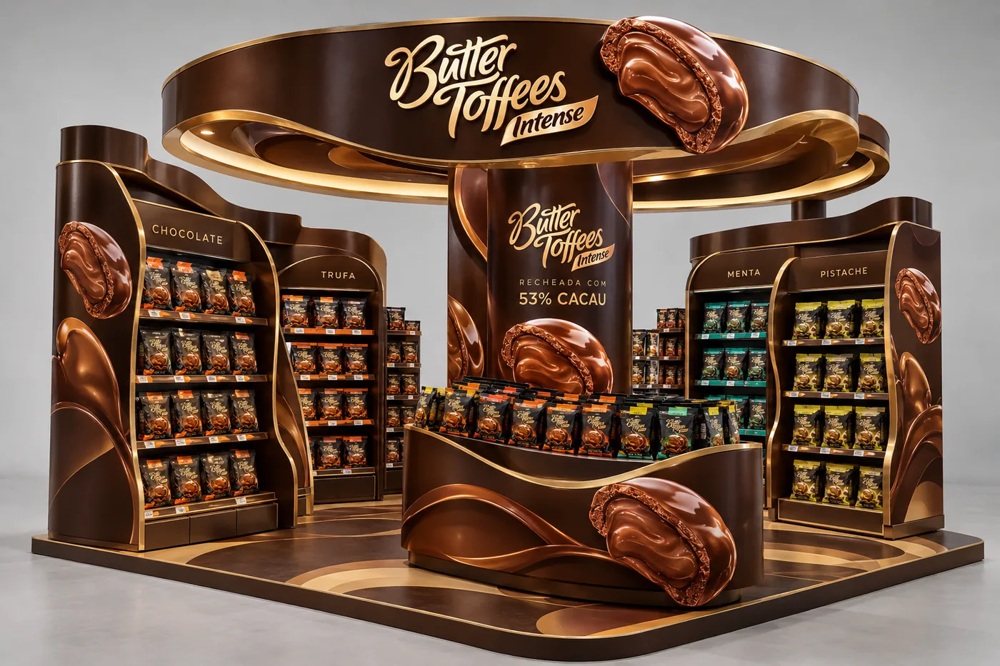
BT-13store in store- Código
- Marrom profundo, splash de chocolate, serifa dourada.
- Forma
- Marrom fosco com dourado em hot stamping, recortes em camadas como onda de chocolate, poucos elementos e muito respiro.
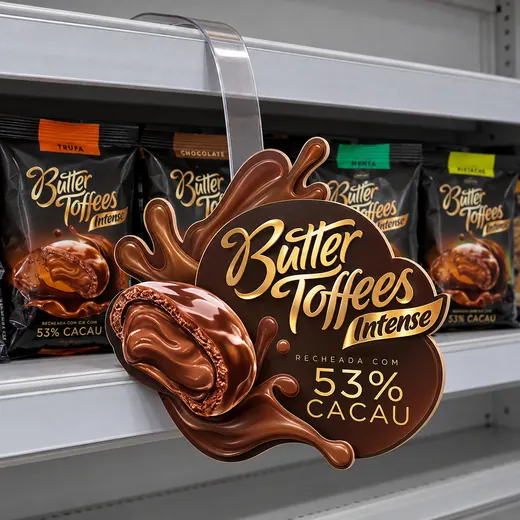
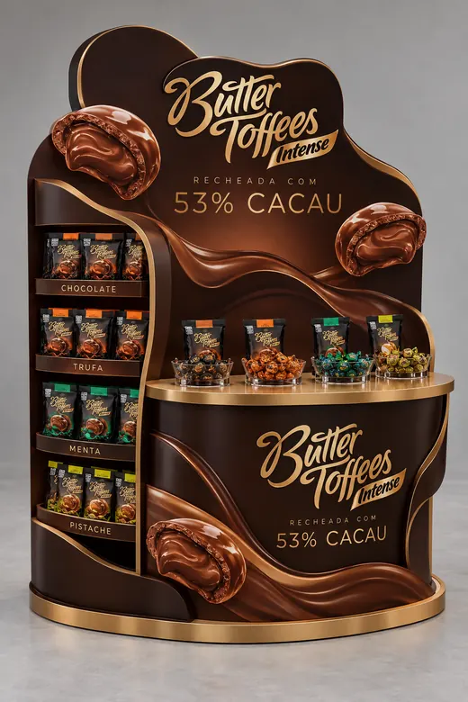
Premium se mostra pelo que falta: menos peças na gôndola, mais acabamento, e o dourado só onde a mão encosta.
Cada peça com medida, material e função na loja.
Escolha a marca e clique na peçaA estrutura é uma régua. A personalidade é da marca.
Troque o tipo de peçaCada peça trabalha num metro diferente da loja.
chama de longe
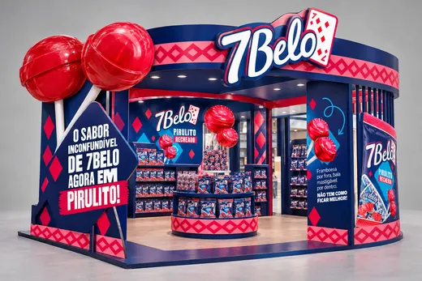
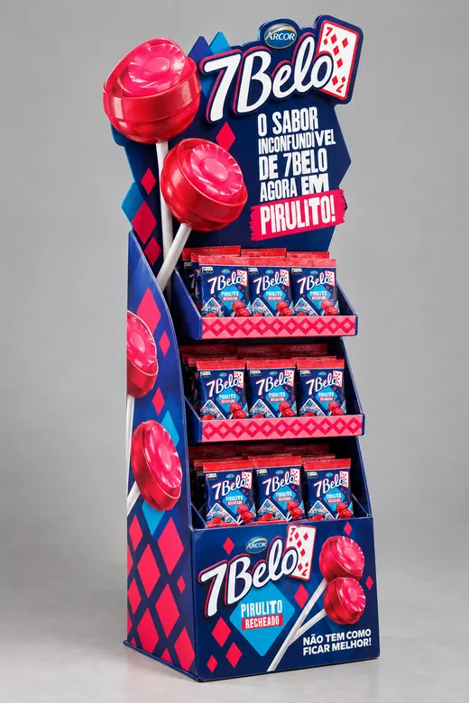
muda a direção do passo
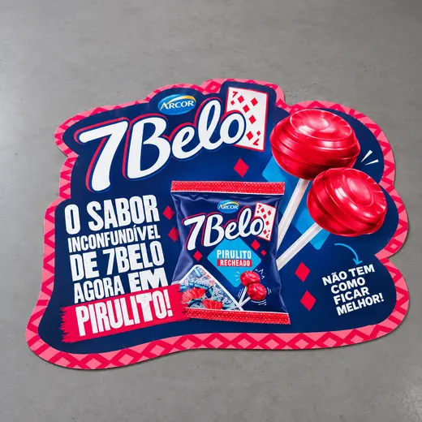
para o olhar no ponto de preço
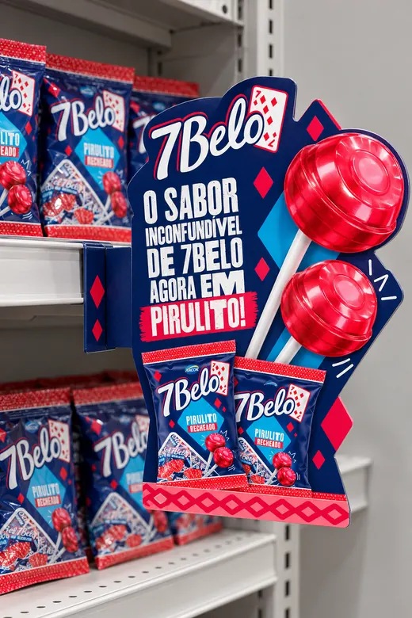
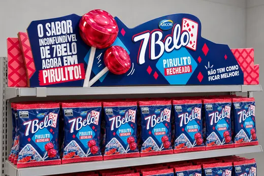
cria um segundo lugar de compra
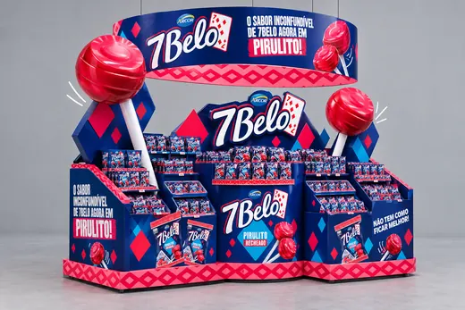
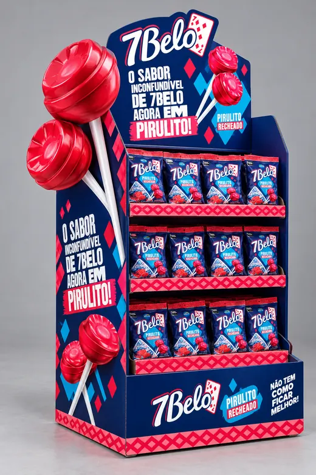
fecha no impulso
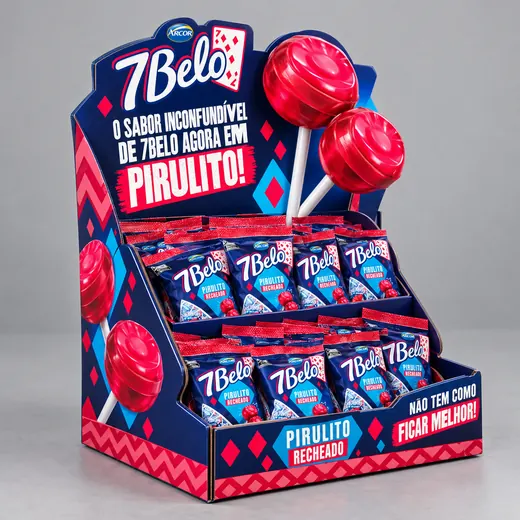
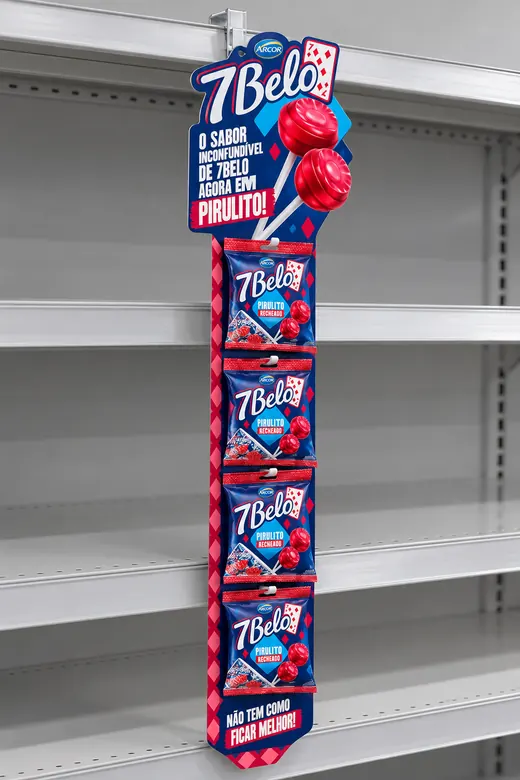
Uma campanha completa não é a soma das peças: é a sequência. Com 7Belo, o shopper vê o pirulito na entrada, encontra no corredor e leva no caixa.
O conceito aprovado já sabe virar peça.
Os 55 conceitos com código (RK, TG, 7B e BT) para aprovar ou pedir ajuste peça a peça.
O aprovado vira modelo 3D e realidade aumentada em tamanho real, aprovado dentro da loja.
Faca, vistas e cotas em DXF e PDF A3, com material e acabamento de cada peça.
Cotação garantida com parceiros homologados, prova de cor e piloto antes da tiragem.
Cada peça sai com número de série: quais chegaram, quantas montaram, com foto.
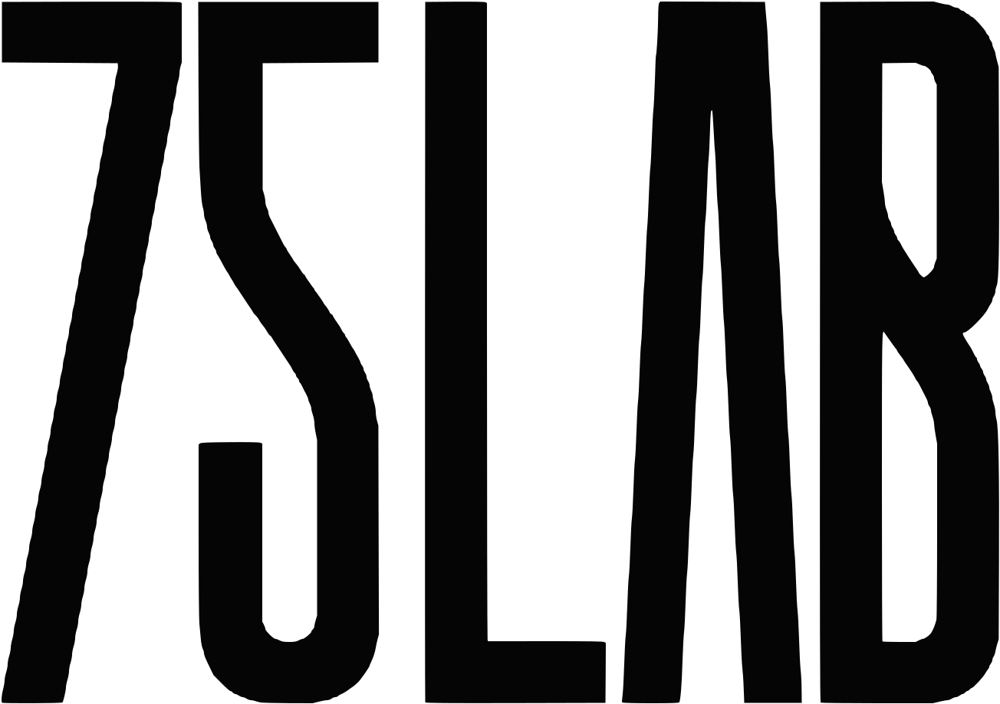
Ideia boa é a que acontece na gôndola.
Esta é a criação que a Arcor recebe toda semana: o KV de vocês, lido com estratégia, desdobrado em peças que sabem onde vão ficar na loja.
75 LAB Estratégia, Design e Produção Ltda · CNPJ 55.470.982/0001-77 · CENU, Torre Norte, Av. das Nações Unidas, 12.901, Brooklin, São Paulo, SP · contato@75lab.com.br · 75lab.com.br · Demonstração criada sem briefing nem manual de marca da Arcor.